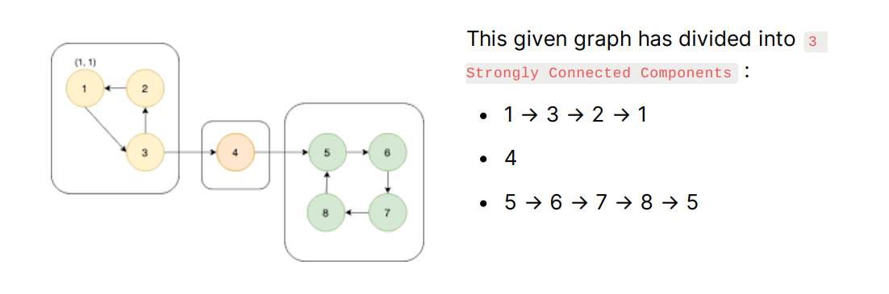
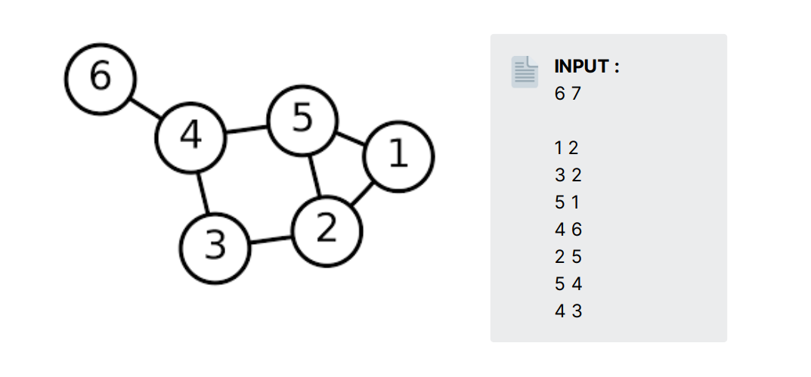
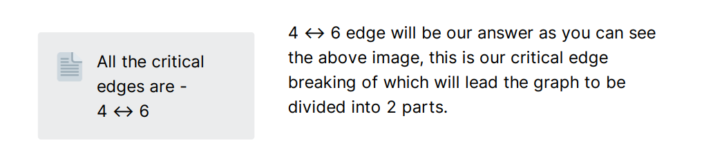
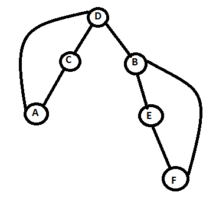

Tarjan Algorithm is just an advance form of DFS traversal where we need to store the order in which we are traversing and discovering each node. Also, it helps us to find Strongly Connected Components in a graph within a linear time complexity.
This term refers to the Directed or Undirected Graph when there is a path between all pair of vertices. A Graph which is not SCC can be divided into SCC graph.

Have you noticed !! 😉 that if you break any edge which belongs in an SCC group, still you can traverse all the nodes in a graph. Bingo !!🤟 You have discovered all the critical edges also (edges which break the graph into two parts if we remove that edge) by only finding SCC in a graph because critical edges are all those edges which are connecting SCC in a graph.
For Example, in our given graph critical edges are :
• 4 → 5
• 3 → 4
If you remove above edges, it will cause the graph to be divided into
two parts, and except these edges breaking any edge
will be fine.
💡 Suppose, you are given a graph whose input format is like - given two space-separated integers 'N' & 'M' which tells number of nodes and number of edges in a graph respectively. Then there is 'M' lines given two space-separated integers stating directed edge between those two nodes. Write a program to find all the critical nodes in a given graph?

Let's first of all, discuss the approach of solving this question when we did not use Tarjan Algorithm so that we get the importance of using it and also help you in exploring the techniques of solving similar problems.
Naive Approach -
Personally ask every edge whether it is a critical edge or not... 😅
1. iterate each node and while iterating remove that particular node.
2. then apply DFS on that graph and see each node is reachable or not.
3. if we can't reach all nodes, then we get our edge to add it to our ans (pair of nodes)
4. In the end add that node to the graph again and traverse for another node.
Now, let's understand this via c++ code :

Time Complexity : Time taken by our DFS function will be O(N+M) , and we are calling that function 'M' times and also time taken to delete an edge, but it can be neglected so overall time complexity goes to → O(M * (N+M)) . It reaches polynomial time, and it will create an issue when 'N' the number of nodes are huge.
Here, Tarjan Algorithm plays a significant role which calculates strongly connected components or critical edges in a graph within a linear time complexity.
Till now, you have heard a lot about this algorithm while reading this article, and finally, now we are going to solve this question using Tarjan Algorithm. Before starting with code first, let's discuss the approach and the idea behind the algorithm :
 Now, as you see in this image, we will face a back edge while traversing it as a DFS, F → B and A → D. If you have noticed, that this back edge has to lead us to Strongly Connected Components in a graph which is,
- B → E → F → B
- D → C → A → D
and where D → B this edge working as a critical
edge.
Approach : ( We have to track a back edge in the graph while traversing it through a DFS )
• We will take 2 linear arrays of size N visitedTime (it will keep track of time DFS had discovered that node) and lowTime (if we discovered any visited node whose visitedTime is low then we update its lowTime → lowest possible time discovered) it will help us to tell its parent node that we have find back edge.
• Now while traversing in DFS you need to update visitedTime and lowTime of that node according to their discovery
• then when covering all the adjacent node of our current node, we skip parent node
• if we found unvisited adjacent node,
1. call dfs() function and
traverse for further node
2. update lowTime if an adjacent node has less
lowTime
3. now, we have found critical edge when visitedTime[current_node] < lowTime[adjacent_node]
• else if we have found visited adjacent node we simply need to update our lowTime with visitedTime of adjacent node.
Let's understand the concept via c++ code :
Time Complexity : By using Tarjan Algorithm, we are just traversing the graph once using DFS and storing all the necessary information we needed. That's why the time complexity goes to O(N+M) which is equal to the time complexity of DFS.
Hope 😇 you get the idea and approach behind this algorithm as I have tried my best to explain this in an as most straightforward manner as possible. Also, for you to feel confident in this topic, I am providing you with some questions :
https://leetcode.com/problems/critical-connections-in-anetwork/submissions
https://practice.geeksforgeeks.org/problems/strongly-connectedcomponent-tarjanss-algo/0
This article is contributed by Rishabh Roshan
So that’s it for this article we will be coming up with our next article on further topics of Graph Theory very soon till then keep learning, keep coding, keep reading and keep improving !!
Happy Coding
By Programmers Army 😊